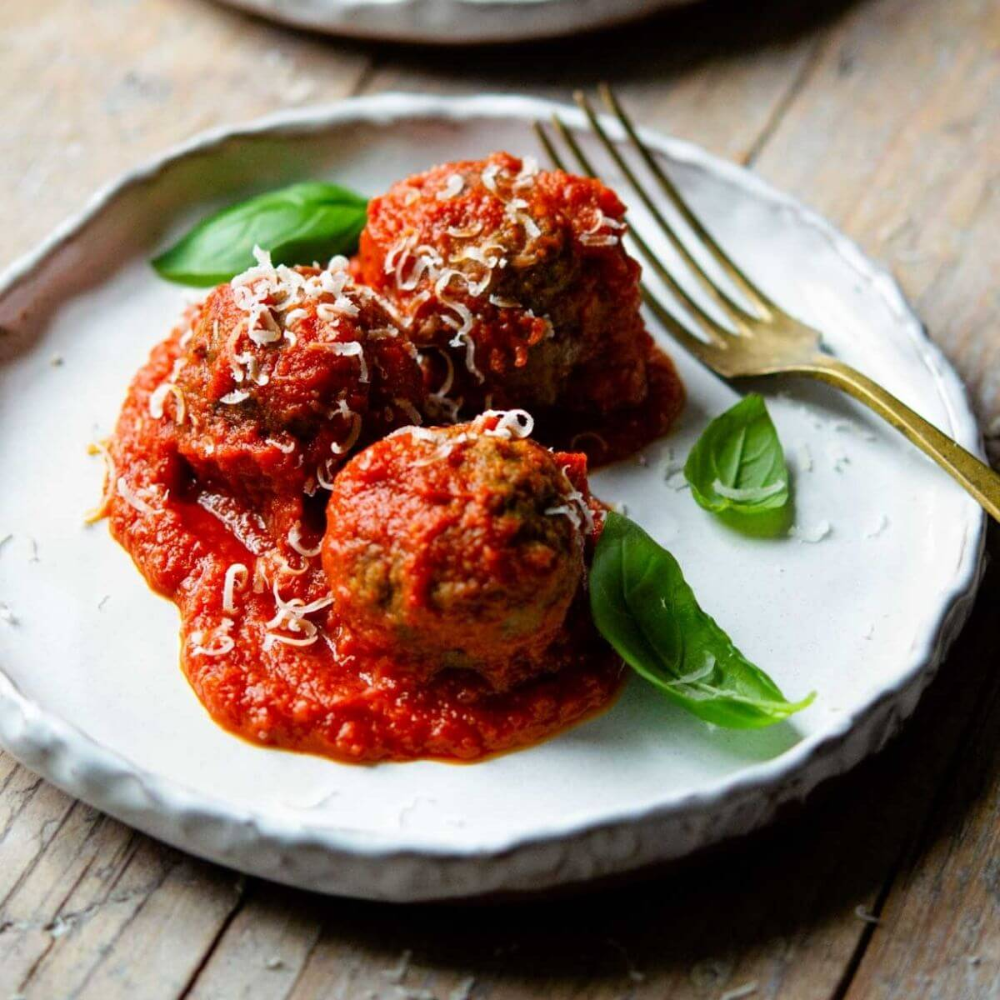

Polpette

Description
These tasty Italian meatballs (polpette) start off in the oven, and finish by simmering in a simple tomato sauce.
Ingredients
- 1 pound ground sweet Italian pork sausage
- 1 pound ground beef
- 1 cup panko bread crumbs
- 1/2 cup grated Parmesan cheese
- 1/4 cup chopped fresh parsley
- 1/4 cup chopped fresh basil
- 1/4 cup chopped fresh oregano
- 1/4 cup chopped fresh mint
- 1/4 cup chopped fresh rosemary
- 1/4 cup chopped fresh thyme
- 1/4 cup chopped fresh sage
- 1/4 cup chopped fresh marjoram
- 1/4 cup chopped fresh tarragon
- 1/4 cup chopped fresh chives
Directions
-
Combine sausage, ground beef, shallot, Parmesan cheese, and breadcrumbs in a large bowl.
Use a wooden spoon to break up the ground meat and roughly mix ingredients together.
Stir in beaten eggs, milk, and black pepper. Use your hands to mix all ingredients well.
-
Preheat the oven to 400 degrees F (200 degrees C). Line a sheet pan with parchment paper or aluminum foil.
-
Pour water into a shallow bowl, and moisten fingertips and palms with water.
Shape meatball mixture into about 40 ping-pong sized balls and place on the prepared sheet pan.
When fingers become sticky, dip them in water.
-
Bake meatballs in the preheated oven until lightly browned and a bit underdone in the center, about 20 minutes.
If meatballs are larger, adjust baking time.
-
Pour tomato purée into a large sauce pot or a Dutch oven set over medium-low heat.
Stir in minced garlic and Italian herbs.
Sample the sauce for seasoning, and adjust, if needed.
-
When sauce begins to bubble slightly, add meatballs and stir gently, coating all the meatballs with sauce.
Keep meatballs and sauce at a low simmer and cook, uncovered, about 20 minutes.
-
To serve, place meatballs and sauce on a plate, drizzle with extra virgin olive oil, garnish with fresh basil leaves,
and sprinkle with additional grated Parmesan cheese, if desired.
Back to
Home Page